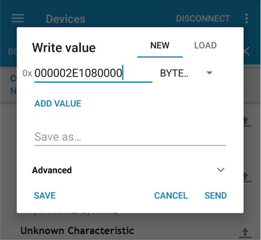
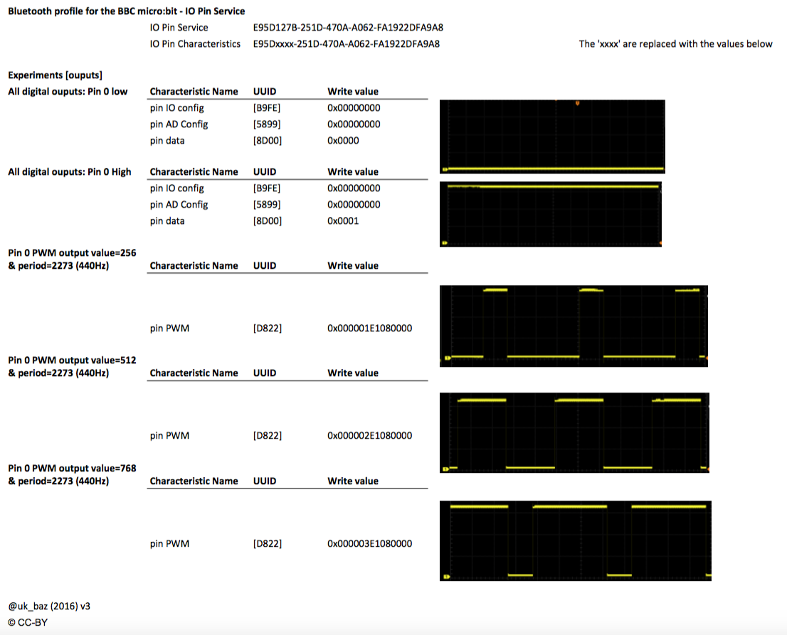

The intention of the Bluezero library is that it will allow people to interact with over Bluetooth without necessarily knowing too much about the low-level details. However, I also want people to be able to learn more about Bluetooth.
What I wanted to capture in this post was the process I went through to understand the IO Pin Service from the micro:bit BLE Profile when I was implementing this is Bluezero.
The most difficult pieces for me to get my head around were:
The first thing needed is some way of sending the low-level commands to the micro:bit.
Below are some details of the apps I used and how I broke the problem up.
Before I start to add functionality to the Bluezero library I like to test my understanding of the service/characteristics with as direct a method as possible. This means working out what hexadecimal octets need to be sent. Doing this type of work normally means using the nRF Connect app from Nordic Semiconductor on a mobile platform. If you are going to be experimenting with BLE and you only want one app, then this is the one to have.
For Linux and Chromebook it is bluetoothctl that I use for this testing.
bluetoothctl is really helpful both for testing what data is sent and received. On Linux it is also useful to have
it running in a different shell when I’m testing Bluezero to see messages from the Bluetooth daemon.
One of the problems with bluetoothctl is that there isn’t lots of internet resources you can refer to about it.
Apart from typing ‘bluetoothctl’ and then typing ‘help’ to get a list of the commands, you need to work things
out for yourself which isn't always easy the first time.
On the Mac I've found Lightblue to be the best although it isn't great and I tend not to use it as often as the others.
Right, back to those pesky characteristics. Let’s start with the PWM output [UUID: E95DD822-251D-470A-A062-FA1922DFA9A8] characteristic. It is made up of seven octets to define three numbers which are:
The final thing we need to be aware of is that fields are transmitted over the air in Little Endian format.
Let’s start with the easy one, the pin number. Take the pin number e.g. 0 and convert it to hexadecimal octet 0x00.
OK, not a great example, let’s try 12 & 19. They would be 0x0C and 0x13 in hexadecimal.
For the value, let’s take four values and convert them into hexadecimal.
256, 512, 768, 1023 become the following in hexadecimal occupying two octets 0x0100, 0x0200, 0x0300 & 0x03FF.
However that isn’t the value we need to send as they are not in the little endian format. This means that the four values we send are 0x0001, 0x0002, 0x0003 & 0xFF03.
My experiments were to activate the buzzer on the MI:power board so I choose the note that is the 49th key from a piano which is 440 Hz and the frequency I wanted to send.
This frequency has a period of roughly 2273 microseconds which as a 4 octet hexadecimal would be 0x000008E1.
We need to change this to little endian so it becomes 0xE1080000.
Now we have worked out how to handle each of the values let’s put it together.
If we wanted to set pin 0 to a value of 512 with a period of 2273 we would send 0x00 0002 E1080000.
In the nRF Connect app this would look like:
When the send button was pressed this created a suitably annoying beep on the the MI:power board
To stop the beep we can just send 14 zeros.
After my experiments I summarised my experiments with the IO outputs with a cheat sheet for future reference:
With the outputs taken care of, it was time to move on to understanding inputs.
There are two characteristics that control if pins are input/output and analogue/digital. Depending how these are set will change the behaviour of pin data.
To read the value of a pin, the Pin IO Configuration [UUID: E95DB9FE-251D-470A-A062-FA1922DFA9A8] needs to be changed.
This characteristic is 32 bits (4 octets) where the 20 least significant bits represent the 20 pins.
If we set a bit to 0 it represents an output while a 1 represents an input.
If we want to set Pin 0 as an input we would need to set the bit to 1.
This would make the hexadecimal value as 0x00000001.
So again, as the data needs to be little endian we would need to send this as 0x01000000.
The Pin AD Configuration is again a characteristic of 32 bits (4 octets) the same as the Pin IO Configuration [UUID: E95D5899-251D-470A-A062-FA1922DFA9A8] but this time a 0 represents a digital pin and 1 represents analogue.
To read an analogue value on a pin we need set it as an input and analogue.
For example pin 2 would require 0x04000000 to be sent to both the Pin IO Configuration and Pin AD Configuration.
Now the pin is configured as an input, this means when we read the Pin Data
[UUID: E95DB9FE-251D-470A-A062-FA1922DFA9A8] characteristic we will see pairs of octets return that represent the
pin and value. For example if pin 5 is a digital input with a high on it then the hexidecimal that would be returned
would be: 0501.
0x05 is the pin and 0x01 represents a high.
It is similar for the analogue input in that there is still a pin/value pair but the value can be higher than 1.
It can be in the range of 0 to 255 (0xFF).
For example pin 2 at half value would return 0280
0x05 is the pin and 0x80 is a value of 128 in decimal.
After my experiments I summarised my experiments with the IO inputs with a cheat sheet for future reference: